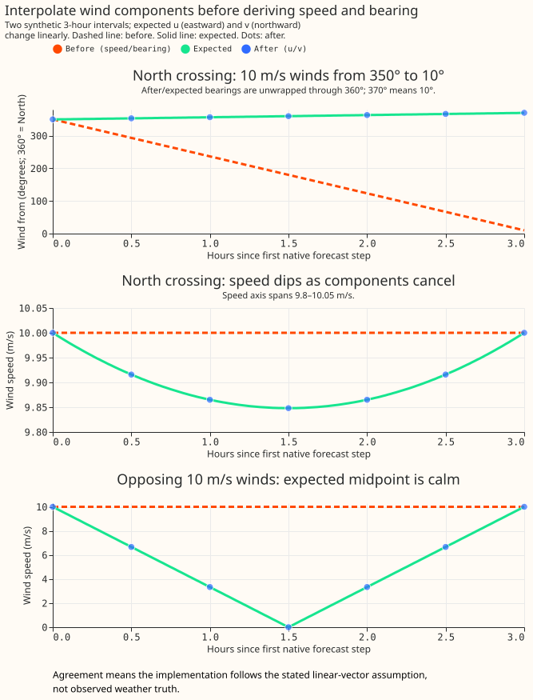
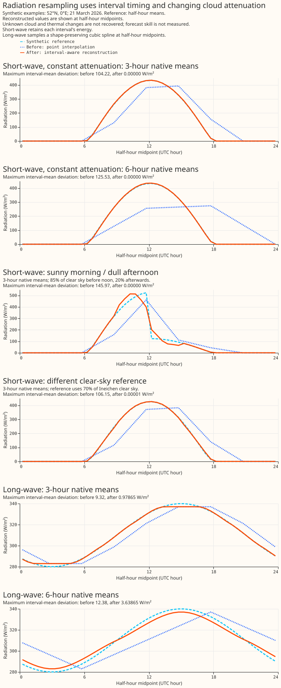

NWP variable conventions
This page says how to read a value out of the nwp Delta table, and what the feature pipeline does
to it on the way to the model. Every ECMWF ENS variable we store is listed with the convention that
governs it: some values describe an instant, some describe the 3 or 6 hours before that instant, and
wind components are signed eastward and northward velocities.
Everything here is a choice this project made, so a defect described on this page is a reason to change our code. Damage the data arrives with is the separate subject of Known ECMWF ENS data-quality issues, which sets out how the two pages divide the subject between them.
The forecast step grid
ECMWF ENS is not evenly spaced over the horizon. Measured on the 2026-08-10 00Z run, and identical in every run in the archive:
| step width | lead times | number of steps |
|---|---|---|
| — | 0 h (analysis) | 1 |
| 3 h | 3 h → 144 h | 48 |
| 6 h | 150 h → 360 h | 36 |
The change at 144 h — 6 days matters most, because the primary user band is 3–10 days (XGBoost improvements), so days 6 to 10 of that band sit on the coarse half of the grid.
The three axes
A variable takes one convention from each of the three axes below. Most are instantaneous, linear and numeric.
Instantaneous versus period-ending
An instantaneous variable describes conditions at valid_time itself.
A period-ending variable is the average rate over the interval that ends at valid_time.
Dynamical.org de-accumulates these from ECMWF's cumulative source fields before we receive them.
Three variables are period-ending: downward_short_wave_radiation_flux_surface,
downward_long_wave_radiation_flux_surface and precipitation_surface. They are legitimately null
at lead 0, because there is no preceding interval.
Beyond 144 h the interval is 6 hours long, so a 12:00 shortwave value is the mean over 06:00–12:00. That window covers much of the morning ramp, so the value is far below the instantaneous irradiance at noon. What changes at day 6 is the averaging window, not the weather.
PowerTimeSeries uses the same convention — its value is the "average power over the preceding
30-minute period" — so the two sides of the NWP-to-power join agree, and features derived from
period-ending NWP should stay period-ending to match.
Linear versus circular
wind_direction_10m and wind_direction_100m are circular: 359° and 1° are two degrees apart
in reality, and 358 degrees apart arithmetically. No arithmetic that assumes a number line —
interpolation, mean, gradient, quantile, standardised anomaly — is valid on them without special
handling. The archive stores wind_u_10m, wind_v_10m, wind_u_100m, and wind_v_100m,
which are linear. Speed and bearing are derived features, not stored weather columns.
Numeric versus categorical
categorical_precipitation_type_surface is a category code, not a quantity, so it is aggregated by
area-weighted mode rather than averaged, and forward-filled rather than interpolated.
It appears to be instantaneous. The three period-ending variables are 100 % null at lead 0, because
there is no preceding interval for them to average; categorical_precipitation_type_surface is
fully populated there. That is good evidence but not proof, since a period field could in principle
be published at lead 0 anyway, so confirm against ECMWF's parameter database
entry before relying on its timing. If it did
describe the preceding interval, forward-filling it would attribute one interval's precipitation
type to the following one.
Every variable, and how to read it
Raw wind columns are instantaneous signed components at both stored heights. All four columns use metres per second and area-weighted H3 spatial means.
| current raw wind column | positive direction | timing |
|---|---|---|
wind_u_10m |
East | instantaneous |
wind_v_10m |
North | instantaneous |
wind_u_100m |
East | instantaneous |
wind_v_100m |
North | instantaneous |
The following table is a historical diagnostic of the polar archive, measured before component
storage. The wind rows describe derived quantities rather than the current raw column set.
The final column measures what the 3 h → 6 h step change costs: the error, at the held-out
intermediate steps, from reconstructing the 3-hourly part of the horizon out of a 6-hourly version
of itself using point interpolation, as measured before interval-aware radiation resampling.
MAE/SD normalises that error
by the variable's own spread, so the column is comparable across variables. Measured on the
2026-08-10 00Z run, scored over the 2,045,304 held-out steps within leads 3–144 h. For the
period-ending variables the 6-hourly product is exactly reproducible by averaging consecutive
pairs of 3-hourly means, so their figures are exact rather than an emulation. The two directions are
scored by mean circular distance — |((reconstructed − truth + 180) mod 360) − 180| — since a plain
subtraction of two angles is not a distance.
| variable | convention | unit | MAE at 6-hourly | MAE/SD |
|---|---|---|---|---|
downward_short_wave_radiation_flux_surface |
period-ending | W m⁻² | 111 | 0.44 |
wind_direction_10m |
instantaneous, circular | ° | 20.9 | — |
wind_direction_100m |
instantaneous, circular | ° | 19.4 | — |
downward_long_wave_radiation_flux_surface |
period-ending | W m⁻² | 6.5 | 0.27 |
wind_speed_100m |
instantaneous | m s⁻¹ | 0.75 | 0.30 |
wind_speed_10m |
instantaneous | m s⁻¹ | 0.57 | 0.28 |
precipitation_surface |
period-ending | kg m⁻² s⁻¹ | 9.6 × 10⁻⁶ | 0.19 |
dew_point_temperature_2m |
instantaneous | °C | 0.49 | 0.17 |
temperature_2m |
instantaneous | °C | 0.66 | 0.15 |
pressure_reduced_to_mean_sea_level |
instantaneous | Pa | 29 | 0.09 |
geopotential_height_500hpa |
instantaneous | m | 2.4 | 0.03 |
pressure_surface |
instantaneous | Pa | 29 | 0.02 |
categorical_precipitation_type_surface |
categorical | code | — | — |
The synoptic variables are unharmed by the coarser grid (MAE/SD 0.02–0.09). Shortwave radiation is
the worst affected numeric variable, at half again the next-worst (0.44 against wind_speed_100m's
0.30). The two directions carry no MAE/SD because a standard deviation of a circular quantity is not
meaningful; their error is the mean circular distance instead.
What the half-hourly resample does today
_upsample_nwp_to_half_hourly builds a 30-minute grid per (nwp_init_time, ensemble_member,
time_series_id) group. Radiation follows a dedicated interval-aware path. Other numeric
fields use point interpolation and the categorical field uses forward fill. Those generic paths
can fill interior source nulls; radiation preserves its source-missing windows.
Nwp.continuous_var_names() remains the numeric-variable set used by storage rounding and dashboard
plots. Resampling dispatch excludes both radiation columns locally, without changing that shared
classification.
Wind components are interpolated before speed and bearing are derived. The feature pipeline
computes sqrt(u² + v²) and (atan2(u, v) × 180/π + 180) mod 360 at half-hourly resolution.
The bearing describes where the wind comes from: North is 0°, East is 90°. Derivation happens
before forecast joins, analysis-proxy selection, weather lags, and rolling features. Wind chill
uses the derived 10 m speed even when speed is not explicitly requested.
Exact calm keeps the formula's 180° result, although calm has no physical direction. Null components propagate to null polar features. Per-component bounds are −200 to 200 m/s as a corrupt-feed guard; the contract does not impose a separate 200 m/s bound on vector magnitude. The ingest averages u and v over the contributing grid points of each H3 cell. Different missing footprints for u and v would imply different contributing sub-areas.
Precipitation still receives ordinary linear interpolation. Its interval-aware reconstruction is tracked by issue #1165.
Interpolate components before deriving speed and bearing
These known-answer examples check linear vector interpolation, not observed weather accuracy. Two synthetic 3-hour intervals assume that eastward u and northward v change linearly between native forecast steps. Before interpolates endpoint speeds and bearings arithmetically. After uses the production half-hourly feature pipeline; expected values come from independent analytic trajectories. The same linear component rule applies to 6-hour native intervals.

Interpolating the vector preserves the North crossing and allows opposing winds to cancel. The North-crossing midpoint is northerly, whereas the old arithmetic bearing is 180° (South). Bearings in the figure are unwrapped through 360°; 370° means 10°. Speed at that midpoint is 9.848078 m/s, below the 10 m/s endpoints. Opposing 10 m/s vectors reach calm at the midpoint; interpolated scalar speeds remain 10 m/s. Calm has no physical bearing, so the opposing-wind panel plots speed only. These deterministic examples need no uncertainty interval and establish no forecast-skill improvement.
Reproduce the figure and its checked CSV/report from the repository root:
uv run python scripts/diagnostics/plot_wind_interpolation.py
npx svgo@4 --multipass --precision=1 --final-newline \
docs/architecture/assets/wind-interpolation.svg
The numerical report and CSV are written under
data/studies/wind_storage/interpolation-proof/. The figure uses 10 m components; the production
expressions and regression tests cover both stored heights.
Why retain linear component interpolation?
The focused wind-farm comparison found no consistent power benefit from smoothing u/v. GPU XGBoost models received only the derived 10 m and 100 m speed and bearing. Across the three wind farms, both tested lead bands and both fixed settings, the pooled point estimates favoured linear interpolation over PCHIP and modified Akima. Most differences were small and uncertain. The experiment and plots explain the interpolation assumptions and compare them with power observations and a direct station-wind check. The focused comparison supports retaining linear interpolation for the current forecasting pipeline; the comparison does not establish that linear is universally more accurate.
Historical bearing interpolation crossed the 0°/360° wrap
A historical audit found that ordinary bearing interpolation can reverse northerly wind. Interpolating 350° → 10° arithmetically yields 180°, whereas the midpoint of equal-speed components points North. On the 2026-08-10 00Z polar archive, native-step pairs straddled North as follows:
| step width | pairs straddling north (_10m) |
pairs straddling north (_100m) |
|---|---|---|
| 3 h | 3.73 % | 3.50 % |
| 6 h | 8.30 % | 8.03 % |
The historical audit compared arithmetic bearings with a shortest-arc angular interpolation. That diagnostic is not observed weather truth and is not generally the same as component interpolation when endpoint speeds differ. Relative to the shortest-arc diagnostic, 6.57 % of interpolated 10 m bearings and 6.32 % of interpolated 100 m bearings differed across the wrap. The stored-component pipeline avoids arithmetic interpolation of bearings; downstream calculations on derived bearings still require circular handling.
Radiation resampling
Both radiation fields describe the interval before their timestamp. The production helper in
ml_core.features._radiation expands each native mean into half-hours inside that backward window.
The helper obtains widths from the ECMWF lead schedule: 3 hours through lead 144, then 6 hours,
including (144, 150]. Width never comes from the previous available value, which could span
missing windows.
The half-hour ending at a native timestamp has a reconstructed feature value, not the original
3/6-hour mean.
Short-wave uses the sun's daily shape and interpolates cloud attenuation. The helper evaluates fractional-year solar geometry from the US National Oceanic and Atmospheric Administration (NOAA), including longitude and equation of time, then Haurwitz clear-sky irradiance. Two 15-minute midpoint samples supply each backward half-hour mean. Averaging these half-hours supplies the matching native-window clear-sky mean. The native radiation divided by that mean is the clear-sky index, anchored at the native window midpoint. Windows with a clear-sky mean of at least 20 W/m² supply indices. The threshold is a conditioning safeguard, not a measured optimum: a small denominator can turn modest diffuse light into an extreme index that distorts the next daylight window. Weaker windows retain their supplied energy but do not supply indices to neighbouring windows.
Interpolation stays within a supported daylight block. The index varies linearly between midpoints; before the first usable index and after the last, it holds the nearest index. Solar night gaps on the half-hour grid separate daylight blocks, even when a short northern summer night fits between two native windows that both contain daylight. Missing native windows split the source support independently. Each window's index is available to every daylight block that window contains, and target means multiply the interpolated index by the half-hour clear-sky mean.
Every complete short-wave window conserves its supplied energy. Short-wave target means are rescaled so their mean equals the native mean; equivalently, the half-hour energy sum equals native mean × native duration. This constraint can introduce boundary steps and does not recover unknown sub-window cloud changes. The index is not clipped at 1.
Fallbacks preserve energy when solar shaping is unusable. If no usable index exists, distribute the native energy in proportion to the half-hour clear-sky means within that window. If all those means are zero, retain the source mean as a constant. A positive native mean whose timestamp falls after sunset can still describe a window containing daylight. A positive fully-dark source window takes the constant fallback, preserving energy rather than claiming both exact nighttime zero and conservation. Zero-energy windows output zero.
Long-wave uses a smooth spline through native-window midpoint means. Piecewise Cubic Hermite Interpolating Polynomial (PCHIP) interpolation preserves local trends without overshooting the neighbouring means. The helper evaluates the spline at each half-hour midpoint, holding the nearest mean before the first anchor and after the last. Two anchors give linear interpolation; a single anchor gives a constant. Thermal radiation depends on atmospheric temperature, humidity, and clouds, so long-wave uses no solar shaping.
Long-wave prioritises smooth features over exact interval energy. Native interval means act as midpoint estimates; spline values evaluated at half-hour midpoints need not average back to each original mean. The half-hour features feed an electricity forecasting model. The smoother long-wave profile avoids imposing steps at every native boundary. Smoothness does not establish a forecast-score gain or recover the unknown thermal variation within an interval. See the PCHIP algorithm for the shape-preserving derivative rules.
Missing source windows stay null in both fields. Lead zero has no preceding window; a finite
lead-3 mean supports lead 0.5 through 3. Source nulls and absent native rows leave their own windows
null, including the final window. Unsupported source identifiers or off-schedule timestamps fail
at collection in bulk research mode. Single-run serving logs unsupported_radiation_schedule,
including example source/run/timestamps, and leaves unsupported radiation null while processing
other weather columns. Native-batch validation runs lazily before window expansion. No window
borrows values from another series, run, or ensemble member. Complete windows are reconstructed
before cropping to the existing output grid, so a visible tail never receives the whole window's
energy.
Training and inference use the same lazy helper. Site metadata supplies coordinates for
short-wave, and geometry is reused across runs and members at matching site/time coordinates.
Long-wave needs no coordinates. Raw NWP storage and rounding remain unchanged.
Direct short-wave callers must supply a complete finite coordinate relation. Missing, null, or
nonfinite coordinates raise invalid_solar_coordinates during collection rather than selecting
the fully-dark fallback. Production's validated site relation supplies those coordinates.
Short-wave neighbour lookup operates on native windows. Forward/backward fills find usable indices within each source segment and daylight block, then a keyed join supplies neighbouring anchors to half-hours. The helper avoids sorting and as-of joining the entire half-hour target frame. The bulk resampler benchmark and reproduction commands report in-memory time and whole-process peak resident set size (RSS), with the scope and scaling limits stated.
Regenerate engineered caches and retrain before deploying power-forecast models against these feature semantics. Corrected timing and smoother profiles do not establish a forecast-score gain.
Synthetic examples show interval timing and changing cloud attenuation. The figure uses an invented coordinate at 52°N, 0°E on 21 March 2026. Short-wave reference means use independent pvlib solar geometry and 70% of Haurwitz clear sky in the constant-attenuation examples. A further 3-hour example uses 85% before noon and 20% afterwards, representing a sunny morning and dull afternoon. A separate 3-hour example uses 70% of Ineichen clear sky at sea level with fixed Linke turbidity 3, so the reference shape differs from production's Haurwitz shape. Long-wave reference means follow a prescribed smooth daily curve. Aggregating the reference half-hours supplies identical native inputs to point interpolation and the production feature pipeline. The plotted middle day has complete 3-hour or 6-hour windows; nighttime values remain visible so displaced short-wave energy cannot disappear from the comparison.

The constant-attenuation examples show the short-wave timing correction. The energy centroid is the average half-hour midpoint weighted by that half-hour's radiation energy. Point interpolation delays the whole-day short-wave energy centroid by 1.25 hours with 3-hour inputs and 2.73 hours with 6-hour inputs. The new delays are under 12 seconds, with native-window mean errors below 0.000003 W/m². The reported delays and mean errors describe these synthetic examples, not forecast scores.
The different-shape example tests timing beyond the matched clear-sky formula. Its reference uses Ineichen clear sky while reconstruction uses Haurwitz. The centroid delay falls from about 1.25 hours to about 5.3 seconds in this example. The matched-Haurwitz examples are positive controls; none of these synthetic cases establishes a bound for other locations, seasons, or cloud profiles.
The sunny-morning example retains each interval's forecast energy. The reconstructed profile retains the stronger morning and weaker afternoon. Interpolation and rescaling can smooth the noon change or introduce boundary jumps; the native means cannot identify the true cloud-transition time.
Long-wave PCHIP trades exact interval energy for a smooth profile. Interval-mean deviations are below 0.98 W/m² for 3-hour inputs and 3.64 W/m² for 6-hour inputs in the prescribed daily curve. The smooth long-wave reference is one possible underlying curve; the native means cannot identify the true thermal variation. The script prints every plotted deviation and centroid shift in its generated report.
Reproduce the figure and report from the root of the nged-ml-research repository, where the
script lives:
uv run python studies/radiation_resampling/plot_radiation_resampling.py
npx svgo@4 --multipass --precision=1 --final-newline docs/architecture/assets/radiation-resampling.svg
The archive confirms the period-ending reading. Forming the clear-sky index two ways over the 2026-08-10 00Z run (1671 cells × 51 members, ~2.8 M rows after restricting to those where clear-sky irradiance exceeds 200 W m⁻², so the ratio is well conditioned) settles it. Cloud enhancement can lift irradiance a few tens of percent above the clear-sky value, so an index a little over 1 is real — but an index of 2 is not, least of all for a 6-hour mean over a whole H3 cell:
| step | GHI / CS(valid_time) p99 / max |
GHI / CS(mean over preceding step) p99 / max |
|---|---|---|
| 3 h | 2.0 / 2.2 | 0.99 / 1.02 |
| 6 h | 2.3 / 3.0 | 0.96 / 1.03 |
The period-mean denominator sits at 1.0 to within the clear-sky model's own error in both halves of the horizon; the instantaneous one implies irradiance twice what the sky can deliver. The exact tail figures depend on the clear-sky model and the daylight cut-off, so treat the leading digit as the result.
Instantaneous variables lose diurnal amplitude
Linear interpolation between 6-hourly samples misses the daily temperature maximum, which falls at around 15:00, between the 12:00 and 18:00 samples. The loss is measured by emulation, which controls for lead time: comparing the native 3-hourly steps of days 1–6 against a 6-hourly subsample of those same steps, the mean daily temperature range falls from 6.09 °C to 5.37 °C — an 11.9% compression.
This information loss has no exact interpolation fix. The diurnal cycle is not a pure sinusoid:
its asymmetric afternoon peak needs the second and third harmonics, and four samples a day is
already at the Nyquist limit for the second, so some amplitude is genuinely unrecoverable at
6-hourly spacing. A shape-preserving interpolant would recover more of it than a linear one, though
how much has not been measured. The compression feeds the effective-temperature, degree-day and
windchill features.
Wind is stored as components
The archive keeps u/v alone, accepting an 8.90 % increase in sampled Parquet bytes. A paired measurement of 24 full 00Z forecasts across 2025 used identical raw inputs, H3 weights, rounding, sorting, and the production writer. Polar storage used 3.802 GB; u/v used 4.140 GB. Adding scalar-mean speed at both heights raised the total to 4.881 GB, another 17.90 % over u/v. The seasonal storage measurement gives the generated per-run tables and reproduction procedure. The percentages describe the sample, not an archive-wide census. Historical measurements of two August 2026 runs found +6.3 % and +5.7 %; the broader paired sample governs the storage decision.
Vector-mean speed and scalar-mean speed measure different spatial reductions. The pipeline derives the magnitude of the area-weighted mean vector, |E[v]|. Averaging the grid points' magnitudes gives E[|v|], which is at least as large before numerical rounding. Opposing winds can cancel in the vector mean while retaining large scalar speeds. Scalar means cannot be recovered from the stored vectors; obtaining scalar means requires the raw grid-point data. Neither spatial reduction alone gives the mean output of a nonlinear turbine power curve.
Typical spatial gaps are small, but the measured tails are substantial. Before writer rounding, the median scalar-minus-vector gap was about 0.0056 m/s at both heights. At 100 m, the 99th percentile was 0.405 m/s and the maximum was 15.059 m/s; the 10 m maximum was 12.495 m/s. The maintainer chose u/v alone. Scalar-mean speed remains a possible forecasting experiment, not a quantity established as irrelevant by the storage measurement.
Migrate into a separate archive before switching readers
A component schema requires a fresh destination; partition overwrite cannot migrate the archive.
write_nwp rejects an existing table whose column set differs from the incoming frame, while
allowing dtype widening within the same column set.
scripts/maintenance/rewrite_nwp_wind_components.py reads an explicitly pinned local Delta
snapshot and reconstructs u = -speed × sin(bearing) and v = -speed × cos(bearing).
Archived speeds and bearings have already been rounded, so reconstruction cannot recover the
original native components exactly. Writing the reconstructed components applies 13-bit
significand rounding as well. Wind validation bounds the round-trip error relative to the
archived polar values, not the original downloaded u/v. Exact equality applies to row keys and
non-wind columns.
The script writes through write_nwp, verifies exact non-wind columns and row keys, and records
quantization-aware speed and circular-bearing errors after readback. A sibling manifest records
completed partitions and source files. Reruns skip verified partitions; a newer pinned snapshot
adds new partitions and replaces source partitions whose files changed. Source partition removal
requires reconciliation. The source archive remains read-only.
uv run python scripts/maintenance/rewrite_nwp_wind_components.py \
--source OLD_ARCHIVE --source-version VERSION \
--destination NEW_ARCHIVE --limit 4
Validate a seasonal pilot, then finish and catch up before cutover. Remove --limit for the
complete build. Compare source and destination partition inventories, keys, member/lead/cell
coverage, and non-wind values. Pin a newer source version to catch up while the old archive keeps
serving, and confirm the live selected run exists in the destination. Switch the archive setting
and matching code together, retrain affected forecasting models and rebuild derived feature caches.
Keep the old archive, compatible code, and model artifacts for rollback. Never mix old and new
schemas in a single table.
Study extracts must be rebuilt as matching versioned datasets. The horizon extract and day-4 supplement require explicit source, Delta version, and new output directory. Both derive polar values at native steps and record the same source identity; the supplement retains exact equality checks on shared rows. Frozen historical polar extracts require the historical checkout and source archive. A matched forecasting comparison of interpolation ordering remains pending; the storage measurement does not establish forecast skill.